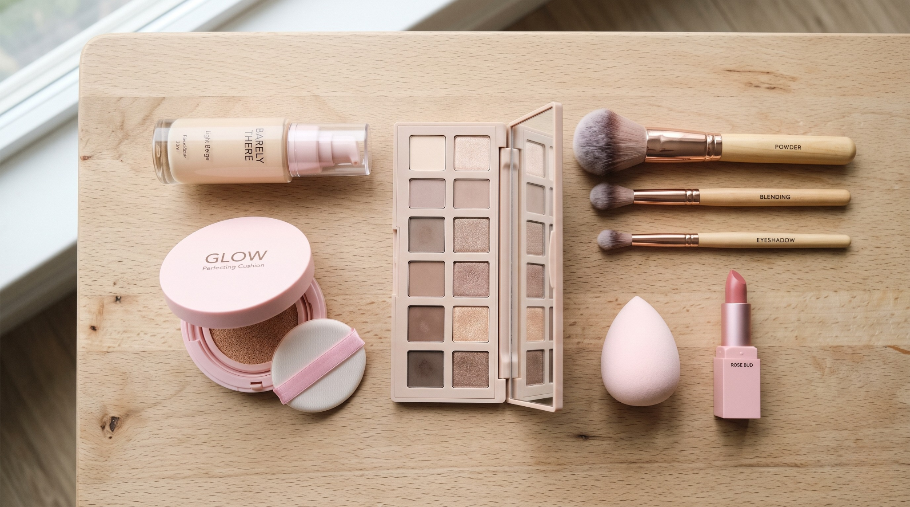

Bước chân vào thế giới làm đẹp, ai cũng từng đứng giữa quầy mỹ phẩm và hoang mang: nên mua gì, bỏ qua gì, cái nào đáng tiền? Mua thiếu thì trang điểm không lên, mua thừa thì lãng phí cả triệu đồng cho những món chẳng bao giờ đụng tới. Bài viết này sẽ giúp bạn chọn đúng dụng cụ trang điểm cho người mới bắt đầu — không chỉ là một danh sách sản phẩm, mà là thứ tự ưu tiên mua, cách chọn theo loại da và những lỗi mà người mới hầu như ai cũng mắc.
Với kinh nghiệm đào tạo hàng trăm học viên từ con số 0, Lilychen Makeup Academy đúc kết tại đây bộ dụng cụ trang điểm cho người mới bắt đầu gọn nhẹ nhất mà vẫn đủ để bạn tự tin makeup mỗi ngày.
Dụng cụ trang điểm cho người mới bắt đầu gồm những gì?

Một bộ trang điểm cơ bản được chia làm hai phần: sản phẩm trang điểm (kem, phấn, son…) và dụng cụ hỗ trợ (cọ, mút, bấm mi…). Người mới thường chỉ chăm chăm mua sản phẩm mà quên rằng dụng cụ tán mới là thứ quyết định lớp makeup mịn hay mốc.
Dưới đây là checklist đầy đủ các dụng cụ trang điểm cho người mới bắt đầu, chia theo 4 nhóm. Sau đó mình sẽ chỉ rõ món nào nên mua trước nếu ngân sách còn hạn chế.
Nhóm 1: Sản phẩm tạo nền cho gương mặt
Lớp nền chiếm tới 70% độ hoàn thiện của khuôn mặt, nên đây là nhóm cần đầu tư kỹ nhất.
- Kem lót (primer): tạo lớp màng mỏng ngăn cách da với mỹ phẩm, giúp nền bám lâu, mịn và ít mốc hơn. Chọn loại kiềm dầu nếu da dầu, loại cấp ẩm nếu da khô.
- Kem nền hoặc cushion: che các khuyết điểm như thâm, nám, đỏ và làm đều màu da. Người mới nên bắt đầu với cushion vì dễ tán bằng mút, khó bị “tay nặng”.
- Che khuyết điểm (concealer): xử lý điểm cần che kỹ như quầng thâm mắt, nốt mụn. Chọn tông sáng hơn da nửa tông cho vùng mắt.
- Phấn phủ: bước khóa nền cuối cùng, giúp kiềm dầu và giữ lớp trang điểm lâu trôi.
Nếu bạn đang lo lắng về da mụn, da dầu, hãy đọc thêm bài Makeup che khuyết điểm da mụn, da dầu: cách lên nền không mốc, không trôi để biết cách phối nền chuẩn cho làn da khó.
Nhóm 2: Trang điểm chân mày và mắt
Đôi mắt và chân mày là nơi tạo “thần thái”, nhưng cũng là phần người mới sợ nhất.
- Chì kẻ mày: định hình và lấp đầy dáng mày. Chọn màu nhạt hơn màu tóc một chút để tự nhiên.
- Phấn mắt (eyeshadow): một bảng tone nâu/cam đất là quá đủ cho người mới — dễ đánh, hợp mọi hoàn cảnh.
- Eyeliner: tạo điểm nhấn cho mắt. Người mới nên dùng dạng dạ (bút lông) vì dễ điều khiển hơn gel.
- Mascara: làm mi dày và cong, mở to đôi mắt. Ưu tiên loại không vón cục.
- Bấm mi (kẹp mi): dụng cụ nhỏ nhưng “lột xác” ánh nhìn, nên có trước cả mascara.
Nhóm 3: Má hồng và son môi
Đây là hai món tạo sức sống tức thì, rẻ mà hiệu quả cao.
- Má hồng: một chút tone cam hoặc hồng san hô giúp gương mặt tươi tắn, bớt thiếu sức sống. Người mới nên chọn dạng phấn vì dễ kiểm soát.
- Son môi: chỉ một lớp son cũng đủ làm bừng sáng cả khuôn mặt. Nên có 1 màu hồng/cam nhẹ cho ban ngày và 1 màu đỏ/đất cho dịp đặc biệt.
Nhóm 4: Dụng cụ tán và hỗ trợ
Đây là phần người mới hay tiếc tiền nhất — và cũng là sai lầm lớn nhất.
- Mút trang điểm: dùng tán kem nền, che khuyết điểm. Làm ẩm mút trước khi dùng để nền mỏng mịn tự nhiên.
- Bộ cọ cơ bản: tối thiểu cần cọ má hồng, cọ phấn mắt và cọ tán phấn phủ. Cọ giúp màu lên đều và hợp vệ sinh hơn dùng tay.
- Cọ môi: vẽ viền môi sắc nét, không lem — đặc biệt hữu ích với son đỏ.
- Xịt khóa makeup (setting spray): bước cuối giúp giữ lớp trang điểm bền màu, không nhòe suốt ngày dài, nhất là với khí hậu nóng ẩm ở Bình Dương.
Người mới nên ưu tiên mua gì trước?
Không phải món dụng cụ trang điểm cho người mới bắt đầu nào cũng cần sắm ngay một lúc. Đây là cách Lilychen khuyên học viên chia ngân sách theo từng giai đoạn:

- Giai đoạn 1 — Tối giản (khoảng 500k–800k): kem lót, cushion, chì kẻ mày, mascara, một thỏi son và một chiếc mút. Bộ này đủ để bạn có gương mặt “đi làm, đi học” tươi tắn trong 10 phút. Tham khảo ngay Cách makeup đi làm nhẹ nhàng trong 10 phút để tận dụng tối đa bộ này.
- Giai đoạn 2 — Hoàn thiện: bổ sung che khuyết điểm, phấn phủ, bảng phấn mắt nâu, má hồng, bấm mi và bộ cọ cơ bản. Lúc này bạn đã makeup được cho nhiều dịp khác nhau.
- Giai đoạn 3 — Nâng cao: eyeliner gel, cọ môi, xịt khóa, các bảng màu chuyên sâu — khi bạn đã quen tay và muốn thử nhiều phong cách hơn.
Nguyên tắc vàng: đầu tư cho lớp nền và dụng cụ tán trước, các món tạo điểm nhấn sau. Một lớp nền đẹp với mút xịn sẽ ăn đứt mười thỏi son đắt tiền.
5 lỗi người mới hay mắc khi mua dụng cụ trang điểm cho người mới bắt đầu
Sau nhiều năm dạy nghề, đây là những lỗi mình thấy lặp đi lặp lại:
- Mua theo trend, không theo nhu cầu. Thấy beauty blogger khen là mua, nhưng món đó hợp da họ chứ chưa chắc hợp bạn.
- Tiếc tiền dụng cụ tán. Dồn hết tiền cho mỹ phẩm rồi tán bằng tay, kết quả nền loang lổ, mau xuống tông.
- Chọn sai tông nền. Mua online không thử nên nền bị “trắng bệch” hoặc “xỉn”. Nên test tông ở viền hàm dưới ánh sáng tự nhiên.
- Mua bảng phấn mắt quá nhiều màu. Người mới chỉ dùng 2–3 màu, còn lại để mốc. Một bảng tone đất là đủ.
- Bỏ qua bước dưỡng và làm sạch da. Dụng cụ tốt mà da chưa được chăm thì nền vẫn mốc. Da là “tấm canvas” — bạn có thể tham khảo các bước chăm sóc da trước khi trang điểm từ Vinmec để chuẩn bị nền da thật tốt trước khi makeup.
Cách chọn dụng cụ trang điểm cho người mới bắt đầu theo loại da
Cùng một sản phẩm nhưng hợp người này lại “phản chủ” với người kia. Hãy chọn theo loại da của bạn:
- Da dầu: ưu tiên kem lót kiềm dầu, kem nền lì (matte), phấn phủ kiềm dầu và xịt khóa. Tránh nền quá bóng (dewy).
- Da khô: chọn kem lót cấp ẩm, cushion/kem nền dạng dewy, hạn chế phấn phủ dày để tránh mốc và lộ vảy da.
- Da hỗn hợp: dùng kem lót kiềm dầu ở vùng chữ T, dưỡng ẩm ở hai bên má; phấn phủ chỉ dặm vùng dầu.
- Da nhạy cảm: ưu tiên sản phẩm thành phần lành tính, không hương liệu; thử ở mu bàn tay 24h trước khi dùng lên mặt.
Còn việc chọn màu son, dáng mày, kiểu mắt thì phụ thuộc vào khuôn mặt và phong cách — đây là phần khó tự học nhất qua video, và cũng là lý do nhiều người chọn học một khóa makeup cá nhân để có người hướng dẫn trực tiếp.
Có đủ dụng cụ rồi, làm sao trang điểm cho đẹp?
Đây là sự thật ít ai nói với bạn: mua đủ dụng cụ chỉ là 30% câu chuyện, 70% còn lại nằm ở kỹ thuật. Cùng một bộ đồ, người biết tán sẽ cho ra lớp nền căng mịn, người chưa biết thì nền mốc và lệch tông.
Tự học qua YouTube giúp bạn nắm lý thuyết, nhưng bạn sẽ không biết mình sai ở đâu vì không có người sửa. Đó là lúc một khóa học bài bản tiết kiệm cho bạn rất nhiều thời gian và tiền bạc mua nhầm đồ.
Tại Lilychen Makeup Academy (Thủ Dầu Một, Bình Dương), lớp học makeup cá nhân được thiết kế 90% thực hành, lớp nhỏ tối đa 5 học viên, để giáo viên cầm tay chỉ việc cho từng người. Bạn sẽ học cách chọn đúng dụng cụ hợp da mình, kỹ thuật tán nền chuẩn và makeup hoàn chỉnh cho gương mặt riêng của bạn.
👉 Đăng ký tư vấn khóa học makeup cá nhân tại Lilychen ngay hôm nay — biến bộ dụng cụ vừa mua thành kỹ năng makeup đẹp mỗi ngày.
Câu hỏi thường gặp (FAQ)
1. Người mới bắt đầu nên mua bao nhiêu dụng cụ trang điểm là đủ? Chỉ cần bộ dụng cụ trang điểm cho người mới bắt đầu tối giản gồm kem lót, cushion, chì mày, mascara, son và một chiếc mút (khoảng 500k–800k) là đã đủ để makeup hằng ngày. Bổ sung dần theo nhu cầu, không cần mua hết một lúc.
2. Có nhất thiết phải mua bộ cọ trang điểm không? Có. Cọ và mút giúp màu lên đều, mỏng mịn và hợp vệ sinh hơn dùng tay. Người mới chỉ cần 3 cọ cơ bản: cọ má, cọ phấn mắt và cọ tán phấn phủ.
3. Nên mua dụng cụ trang điểm online hay ở cửa hàng? Với các món cần đúng tông màu (kem nền, cushion, son) nên mua trực tiếp để thử. Các món như cọ, mút, bấm mi thì mua online tiện và rẻ hơn.
4. Học makeup cá nhân có cần tự mua đồ trước không? Không bắt buộc. Khi học tại Lilychen, bạn sẽ được tư vấn nên mua gì hợp với da và nhu cầu của mình, tránh mua nhầm trước những món không cần thiết.
Kết luận
Chọn đúng dụng cụ trang điểm cho người mới bắt đầu không nằm ở việc mua thật nhiều, mà ở việc mua đúng thứ tự: nền và dụng cụ tán trước, điểm nhấn sau, và luôn chọn theo loại da của mình. Khi đã có bộ đồ hợp lý, bước tiếp theo là rèn kỹ thuật để biến chúng thành lớp makeup đẹp mỗi ngày.
Bài viết được chia sẻ bởi Lilychen Makeup Academy — đào tạo makeup chuyên nghiệp và cá nhân tại Thủ Dầu Một, Bình Dương. Tìm hiểu thêm về lộ trình học makeup chuyên nghiệp từ số 0 đến nhận khách.